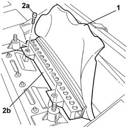

5550D16 third brake light - r r
- Path
- Procedures > 55 ELECTRICAL EQUIPMENT > 5550 warning and manoeuvring indicators > 5550D BRAKE AND REVERSING LIGHTS > 5550D16 third brake light - r r
- Kind
- repair procedure (removal / refitting; the operation number is the code)
- Applies to
- all engines; all production periods
- Interactive page
- https://sloeber94.github.io/elrnDB-lThss/en/#/79603
Applies to: engines: 3.0 V6, 3.2 V6; all production periods
 Removing
Removing
 Refitting
Refitting- Disconnect the negative battery terminal.
See in Op. 7050A20 Single rear seat cushion - R.R.
See in Op. 7050A19 REAR SEAT BACKREST - R.R.
See in Op. 7040H46 Left or right rear pillar upper trim (one) - R.R.
See in Op. 7040B21 Luggage compartment upper TRIM - R.R.
See in Op. 7065C27 Sun blind for electric rearscreen - R.R. with rear parcel shelf removed
-
- Release the electrical wiring for the third brake light from the retaining springs and release it from the points where it is secured to the rear parcel shelf.
1. Partly remove the third brake light trim.
2. Undo the fixing bolts (2a) and remove the third brake light (2b) complete with electrical wiring.

Applies to: engines: 3.0 V6, 3.2 V6; all production periods
Refitting
Removing- Place the third brake light in the housing and secure it using the bolts.
- Reposition the third brake light trim.
- Reposition the third brake light electrical wiring and secure it to the retaining spring.
- Secure the third brake light electrical wiring using special adhesive.
See in Op. 7065C27 Sun blind for electric rearscreen - R.R. with rear parcel shelf removed
-
See in Op. 7040B21 Luggage compartment upper TRIM - R.R.
See in Op. 7040H46 Left or right rear pillar upper trim (one) - R.R.
See in Op. 7050A19 REAR SEAT BACKREST - R.R.
See in Op. 7050A20 Single rear seat cushion - R.R.
- Connect the negative battery terminal.
Topics linked from this page (5)
- 7040B21 Luggage compartment upper TRIM - R.R.
- 7040H46 Left or right rear pillar upper trim (one) - R.R.
- 7050A19 REAR SEAT BACKREST - R.R.
- 7050A20 Single rear seat cushion - R.R.
- 7065C27 Sun blind for electric rearscreen - R.R. with rear parcel shelf removed